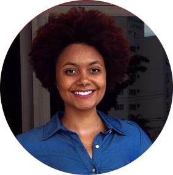

Presidência
Em vista de tornar os projetos do GEUCI exequíveis, é necessário uma equipe responsável e dedicada. Para isso, contamos com os cargos de presidência e vice presidência.
Ambas as participantes abaixo contribuíram para a produção de relatórios e projetos em parceria com o Conselho de Desenvolvimento Econômico da cidade de Uberlândia, com a Diretoria de Relações Internacionais da UFU e com o SEBRAE com o intuito de promover a internacionalização da cidade de Uberlândia.
 Diandra Schatz
PRESIDENTE
Atual presidente do grupo, é estudante do sétimo período de Relações Internacionais e se dedica ao grupo desde 2016.
 Laura Hemilly
Laura Hemilly
VICE-PRESIDENTE
Também cursa o sétimo período de Relações Internacionais e se dedica ao grupo desde 2016, ocupando até recentemente o cargo de presidente.